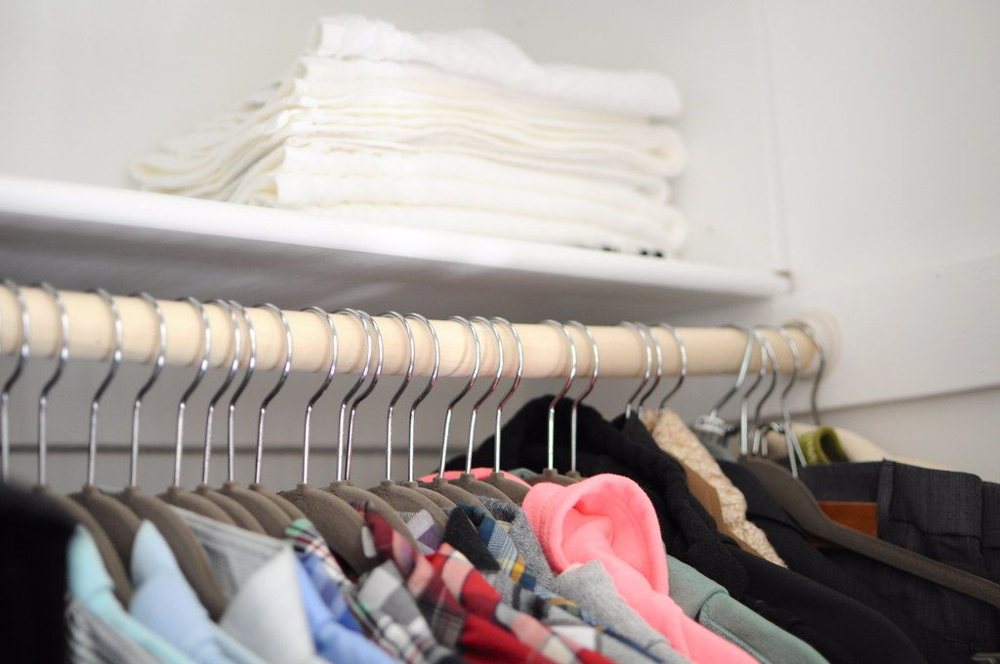

İletişim ve yol tarifi
Arnavutköy Merkez Mahallesi'nde, Adaş Sokak'tayız. Arayın, WhatsApp'tan yazın ya da haritadan yol tarifi alın.
Her gün 24 saat açık.
Haritada
Merkez mah, Adaş Sk., 34275 Arnavutköy/İstanbulHarita açılmazsa aşağıdaki düğmeyle Google Haritalar'da yol tarifini doğrudan başlatabilirsiniz.
Google Haritalar'da yol tarifi
Çalışma saatleri
| Pazartesi | 24 saat açık |
|---|---|
| Salı | 24 saat açık |
| Çarşamba | 24 saat açık |
| Perşembe | 24 saat açık |
| Cuma | 24 saat açık |
| Cumartesi | 24 saat açık |
| Pazar | 24 saat açık |
Saat bilgisi işletmenin Google profilinden alınmıştır. Gece geç saatte uğrayacaksanız önce aramanızı öneririz.

Gelirken yanınızda olsun
- Parçalarınız, mümkünse askıda ya da katlanmış olarak; abiye ve takımı askıda getirmek kırışığı azaltır.
- Lekeli yerleri gösterebileceğiniz kısa bir not: ne lekesi, ne zaman oldu.
- Perde getiriyorsanız panel sayısı ve ölçüleri.
- Etiketi kesilmiş parçalar için kumaş bilgisi ya da satın alırken çektiğiniz bir fotoğraf.
Neyi getireceğinizi önceden yazmak isterseniz talep sayfasında parçaları seçip hazır mesajı gönderebilirsiniz.
Google'da 4,9 puan
608 değerlendirmenin ortalaması. Müşterilerin yorumlarını Google'da okuyabilirsiniz.